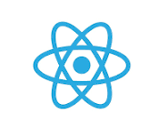
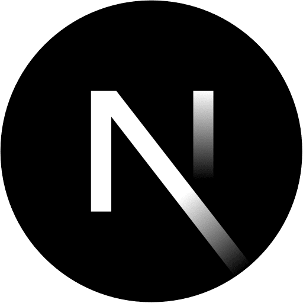

Technologies à apprendre

React.js Node.js
Node.js
Next.js Laravel
Laravel UI/UX Design
UI/UX DesignAprès mon BTS SIO, je souhaite poursuivre en développement web en alternance et devenir un développeur front-end ou full-stack avec des compétences en UX/UI design.
À court terme : maîtriser JavaScript, React, Node.js et les frameworks modernes en participant à des projets concrets.

React.jsNode.js
Next.jsLaravelUI/UX DesignProposer mes services, compétences et savoir-faire à des clients.
Application Android pour regarder des animes, webtoons et mangas en VF/VOSTFR.
Améliorer mon projet TMDb avec espace utilisateur et recommandations IA.
Boutique en ligne avec paiement sécurisé et gestion des stocks.
Dans les prochaines années, évoluer vers un poste de développeur full-stack ou front-end, voire UX/UI designer. Créer une startup digitale axée sur des expériences web modernes et accessibles.
J'aimerais créer une plateforme où l'on pourrait partager et regarder ensemble des animes, webtoons et mangas gratuitement.
Contribuer à des projets open source, collaborer avec d'autres développeurs et continuer à apprendre les technologies émergentes.
"Le futur appartient à ceux qui croient à la beauté de leurs rêves."
— Eleanor Roosevelt
2ᵉ année de BTS SIO en initial — apprendre, expérimenter et se perfectionner dans le développement web.
Option 1 : Licence générale informatique en initial ou alternance
Option 2 : École privée en développement web / UX/UI design en alternance
Option 3 : BUT Informatique / IUT informatique
Master informatique. Premier emploi CDD/CDI dans le domaine du web.